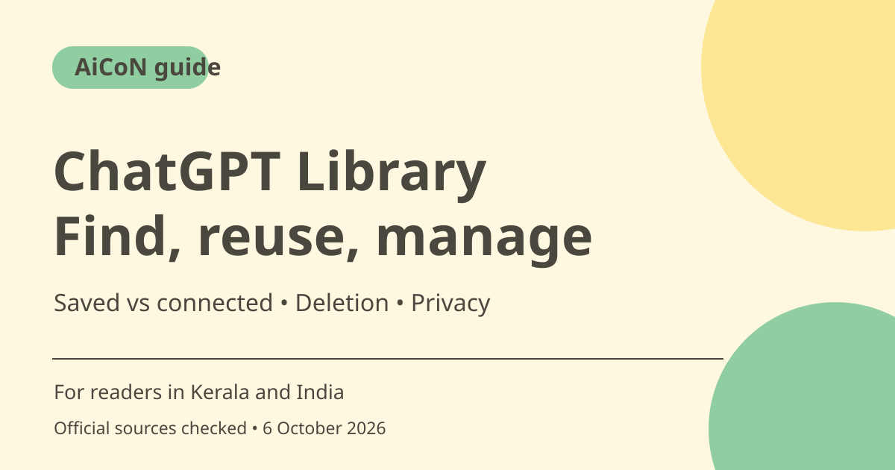

ChatGPT Library: reuse files, storage limits and privacy
ChatGPT Library lets you find and reuse uploaded or generated files, with the full experience on web. Saved files and connected-source files behave differently. Review storage, retention and permissions before uploading private work, and remember that deleting a chat does not necessarily delete its Library files.

What is Library?
OpenAI's help describes browsing, searching, downloading and deleting saved files, then adding them to other chats. Where available, it can also show content from connected services such as Google Drive, Box, Dropbox and SharePoint. A saved upload is not the same as a live connected document, so check which version you are using.
Plans and devices
The current help lists Free, Go, Plus, Pro, Business and several organisation workspace types, including accounts in the EEA, Switzerland and UK. Full Library is on web; iOS and Android have recent files in the composer and file search. Connected sources, controls and availability vary by account, plan, region and permissions. Do not assume the phone interface has every web feature.
Saved versus connected files
Temporary-chat uploads are not saved while the chat remains temporary; converting it into a history chat can save eligible files under the stated limits. ChatGPT Health uploads are not saved to Library. Connected Drive files remain associated with Drive, and the help says My Drive and directly shared items are included, not Shared Drives.
Reusing and changing a document
Use Add from library to attach a saved file to a conversation. It stays in Library unless deleted separately. Connected files follow the connected account's permissions; source updates are possible only where supported and authorised. Before asking for an edit, confirm the original file and intended change so you do not confuse analysis of a copy with an update to the shared source.
Storage and deletion
The checked help lists Library storage of 500 MB for Free, 4 GB for Go, 20 GB for Plus/Business and 100 GB for Pro. These are separate from daily attachment limits. Deleting a chat does not remove a separately saved Library file. OpenAI schedules eligible deleted files for permanent deletion within 30 days, with stated security/legal and de-identification exceptions.
Privacy and workspace controls
For individual services, eligible files and chats may be used to improve models when Improve the model for everyone is enabled. The help says business and specified organisation workspace content is not used for training by default. Admins can control available app actions, automatic referencing and retention. Review your account's data controls and permission to upload other people's content.
How to use it, step by step
- On ChatGPT web, open Library from the sidebar and search or filter the files available to your account.
- Check whether the item is an uploaded/generated file or a connected-source document, and confirm its version.
- Use Add from library in a conversation to reuse a saved file. Choose only information you are allowed to upload or disclose.
- For connected Drive access, verify the selected Google account and requested app permissions. Workspace admins may need to allow required actions.
- Review Storage for space and limits. Do not confuse Library storage with daily attachment allowances.
- Delete a saved file from Library separately when required; deleting its chat is not enough. Manage connected-source files in the original service.
- Review data controls, automatic Library search and workspace retention before storing confidential material or allowing source edits.
Cost, eligibility and limits
| Feature access | Listed for Free and supported paid/workspace plans, but connected sources and controls vary. |
|---|---|
| Storage | Free 500 MB; Go 4 GB; Plus/Business 20 GB; Pro 100 GB in the checked help. Workspace policies can differ. |
| Drive access | Listed for supported paid/workspace accounts on web. My Drive and directly shared files, not Shared Drives. |
| Privacy/deletion | Separate Library deletion matters. Individual model-improvement setting and organisation retention rules need review. |
Frequently asked questions
Does deleting a chat remove its saved files?
Not if they remain saved separately in Library. Delete them from Library too when appropriate.
Is the full experience on phones?
The help says full Library is on web; phones have recent files and file search.
Can I delete a connected Drive document from Library?
The help says connected Drive files and folders must be managed in the original service.
Official sources
Checked 6 October 2026. Features and prices can change. This is a guide, not a personal product test.